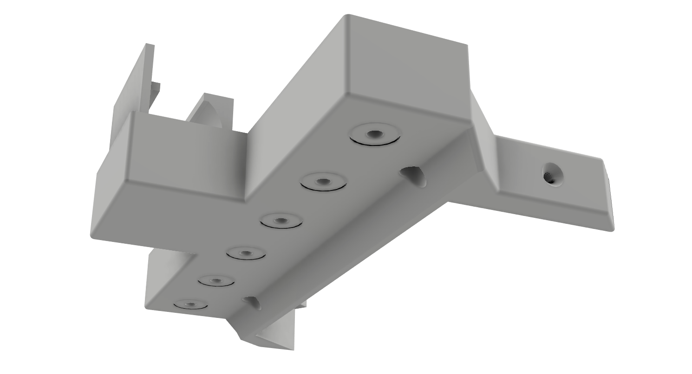
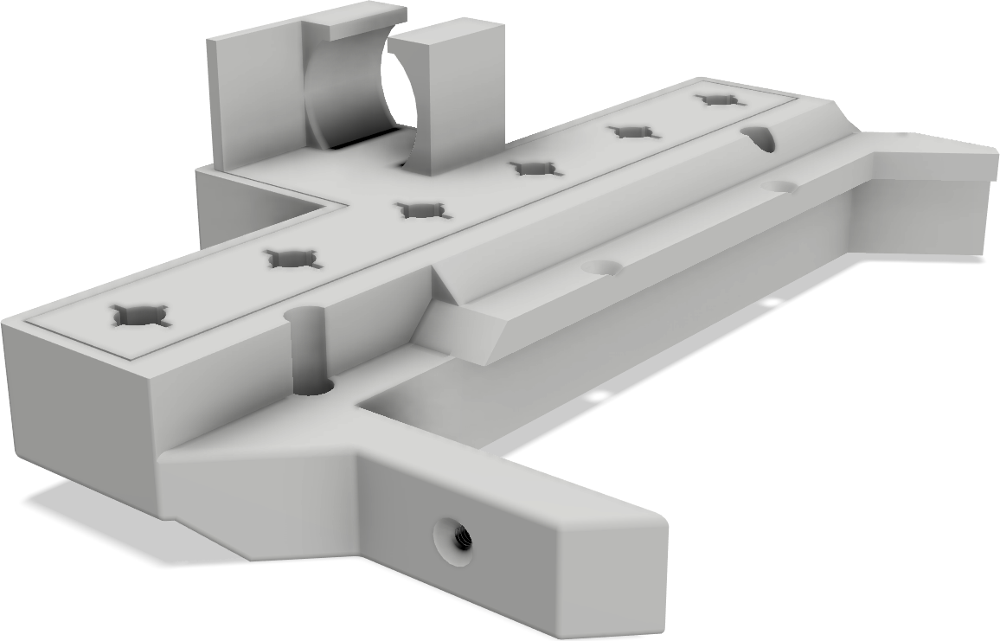

Six needles on their hubs, and a shake that lets the droplet go
The pump meters the volume; the nozzle module puts it in the tube. Six blunt dispensing needles sit in a fixed line above the sample rail, one dedicated path per reagent. Every droplet has to land within 5 mm of its target from under 5 cm, and a droplet that stays on the tip is a dose that never arrived. The module was inherited inoperative and without a mount; the rebuild seats each needle on its moulded hub, swaps the printed eccentric weight for metal, and holds the carrier with elastic bands.

Placement, not metering. The pump decides how much; the nozzle decides where it lands and whether it leaves the tip at all.
What it does
- Delivers each reagent into the tube. Six needles, one per reagent line, in a fixed line above the sample transport rail.
- Places the droplet. The requirement is geometric: every droplet lands within a 5 mm target radius when released from a dispensing height under 5 cm. Between tip and tube the droplet answers only to gravity, inertia and its own surface tension.
- Releases the droplet. A droplet that stays pinned to the tip is a fatal delivery error the pump cannot compensate: the correctly metered volume never reaches the tube.
- Non-contact. The droplet crosses an air gap; the needle touches neither the tube nor the liquid, which removes tube-to-tube carryover by design.
Hand-over and the second ideation
Marius Schiller conceptualised and prototyped the first version in the companion thesis: industrial blunt dispensing needles (flat-ended stainless cannulas in moulded plastic hubs, sold across gauges at consumable prices) plus an active vibration mechanism, a compact brushed DC motor with an unbalanced shaft mass that shakes the array and gives the droplet downward momentum. He validated the principle on a single needle carrying a pendant droplet. At hand-over the geometry was partly established but the mechanism was inoperative: the printed eccentric mass gave too little imbalance to shed droplets, and the assembly had no interface to the chassis.
The vibration-detachment concept was kept throughout. The CAD was not: the inherited models were OpenSCAD, which exports polygon meshes only. Opened in Fusion 360 they were unmodifiable solids with no sketches or editable dimensions, so the module was modelled from scratch from calliper and bench measurements.
Two alternatives rejected before the rebuild
| Concept | Why it was rejected |
|---|---|
| Cantilever vibrating strip. Needles along a thin flexible strip fixed at one end, oscillated by an eccentric motor, like a flicked ruler. No sliding joints or guides. | Kinematics. A cantilever deflects through an arc, not a straight line, so the tip picks up a lateral velocity and ejects droplets at unpredictable angles, violating the 5 mm landing radius. |
| Bare cannula direct insertion. Pull the steel cannula out of its hub and push it straight into the PVC pump tubing. No fittings, no wetted joints. | Serviceability. A bare cannula is a fragile, slippery cylinder with no locating feature; it needs tool clamping and precise manual insertion, the opposite of toolless field operation. |
Three component trials on printed coupons retired the unknowns before the full six-seat carrier was committed. Then the bench added the bands.
Hub seat: the needle locates on its moulded hub
The inherited design clamped each needle with a set screw bearing on the steel cannula in a V-groove. Rigid, but every swap needed a tool, and over-tightening readily crushed the thin-walled cannula, occluding the bore or bending the tip.

The moulded plastic hub is the better locating feature. Across commercial assortments the hub dimensions and Luer geometry are identical; only the cannula bore varies. A printed test coupon with a cavity formed as the negative imprint of the hub, dimensioned from calliper measurements, accepted the needle with an exact slip fit on the first print. The seat has a keyed slot matching the hub ears from above and a cannula clearance bore from below.
Luer coupling: one wetted fitting
Retention and fluidic connection converge on the same feature. The hub is at once the mounting seat and the female Luer port. It takes a standard male Luer-to-barb adapter; a short soft-walled junction tube joins the barb to the main PVC line that runs back through the peristaltic pump to the reservoir.
This puts a single wetted fitting into the delivery line, unlike the unbroken tube path through the pump. In exchange the joint is rugged and user-serviceable: an untrained operator disconnects and replaces it by hand.
Vibration release: a metal eccentric mass
The inherited prototype could not detach droplets because its eccentric mass was a small printed plastic arm. On the bench it was replaced with metal: a compact permanent magnet taped to the motor shaft, loaded with three steel nuts on the eccentric side. Metal is denser, and offsetting the nuts lengthens the moment arm, so the unbalanced momentum is several times the printed weight's at the same speed.
| Element | As built |
|---|---|
| Motor | RD520PA, 3 V brushed DC |
| Supply | Instrument 5 V bus |
| Driver | IRF520 MOSFET, switched by the microcontroller |
| Duty cycle | Capped at about 60 % in firmware, to prevent overheating |
| Noise suppression | Ceramic capacitors at the motor. The brushed motor's electromagnetic interference needed dedicated decoupling to protect the shared I2C bus |
A droplet leaving the tip, slowed down. Portrait clip, sound off; it plays only while in view.
The dispensing sequence
Fluid delivery
The pump meters the target volume through the selected channel. Where the tip bore is wide enough, the liquid accumulates into a pendant droplet held by surface tension.
Vibrational pulse
The microcontroller energises the motor for a short burst. The rotating mass drives the carrier into high-frequency vertical oscillation along its guide posts.
Inertial release
Downward acceleration overcomes capillary pinning; the droplet leaves with vertical momentum into the tube. The bands arrest overshoot without damping the stroke.
Step 3 is conditional on step 1. A tip that streams instead of dropping leaves the burst with nothing to release, or a droplet too small to be detached.
Carrier, holder, and the retaining bands
The validated seat and drive were integrated into a two-part mechanism. The nozzle carrier is a rigid travelling carriage: the motor cradle at one end and six hub seats in a line at the standard 22 mm pitch. The fixed holder is a stationary bracket that bolts to the rear wall of the alignment-module chassis.




The carrier couples to the holder through vertical cylindrical guide posts moulded into its underside, which constrain it to one degree of freedom, vertical. The eccentric mass pushes in every radial direction; the guides absorb the lateral component so the needles translate purely up and down. Necessary for a vertical departure, but not sufficient: whether the droplet itself leaves straight also depends on the tip fitted.
What the bench showed
Fix: two horizontal holes drilled through the holder body and two elastic bands around the carrier. The bands stay slack through the small working amplitude, so they add no damping to the active stroke, and take up tension only at the travel limits. A rigid fastener or an inextensible cord is either too loose to retain or too tight to permit motion; the bands' nonlinear restoring force does both jobs.
- Off-centre excitation. The motor body sits on the carrier centreline but the rotating mass is offset to one side of the shaft, so the carrier sees a twisting moment alongside the vertical oscillation, tilts slightly, and binds on the posts more readily than centred excitation would. Centring the rotating mass is the geometric fix.
- Printed sliding surfaces. Layer-line roughness of FDM PLA gives intermittent stick-slip on the posts, and the slender posts flex under lateral loads. Both absorb part of the stroke's energy. Metal posts or machined bushings would give it back.
- The rejected cantilever would have avoided sliding friction entirely, but its arc still rules it out: a rough linear guide that delivers purely vertical acceleration beats a frictionless one that scatters droplets.
Five tip types on distilled water on the assembled instrument, then the forty-tube validation run with 22 G needles on both channels.
The tip regime: bore decides whether a droplet forms at all
The mechanism was designed against a pendant droplet: liquid emerges slowly, surface tension holds it, a vertical impulse releases it. Whether the assembled instrument behaves that way depends on the tip, and strongly enough to decide whether the module does anything at all. Four steel blunt needles from the assortment (gauge coded by hub colour, bores from the assortment data) and a set of plastic biotech pipette tips were run on distilled water on the assembled machine.
| Tip | Bore | What leaves the tip | Vibration burst |
|---|---|---|---|
| 27 G steel, clear | 0.21 mm | A fast stream; no droplet forms, a small residue stays on the tip | Nothing to act on |
| 25 G steel, dark pink/red | 0.26 mm | As above, indistinguishable | Nothing to act on |
| 22 G steel, blue | 0.41 mm | A droplet forms and grows; most release, small ones often do not | Releases, some scatter |
| 21 G steel, violet | 0.51 mm | As above, indistinguishable | Releases, some scatter |
| Plastic pipette tip | not measured | A droplet forms at every volume tried, comparable in size to the 22 G; small droplets release as readily as large | Releases cleanly |
Below roughly 0.26 mm of bore the liquid streams and no droplet forms. Above roughly 0.41 mm a droplet forms and the burst releases it. The boundary lies between those bores and is a property of the consumable, not of the module.
The instrument was validated with 22 G needles on both channels, the best tip available on a Luer seat and not the best tip tried. A finer cannula is not an alternative: reducing the bore moves the tip toward the streaming regime, where the burst has nothing to release.
As-built numbers

| Item | As built |
|---|---|
| Needle positions | 6, at 22 mm pitch, directly above the tube indexing axis |
| Channels fitted | 2, each with a 22 G needle (blue hub) |
| Joint per channel | Female Luer hub, male Luer-to-barb adapter, short soft junction tube, PVC line to the pump |
| Line length | 450 mm of PVC tubing from each pump head to its hub |
| Vibration motor | RD520PA 3 V brushed DC in a compliant printed cradle, tape-wrapped eccentric mass, ceramic suppression capacitors at the motor |
| Retention | Elastic band over the carrier through two cross-drilled holes in the holder |
| Fixing | Two screws down into the chassis, a third driven horizontally into the bay wall on the left |
| Interface | What it is |
|---|---|
| Mechanical | Holder bolts to a reinforced mounting boss on the alignment chassis rear wall; rigid axial alignment with the sample deck |
| Fluidic | Six independent female Luer hubs mating with Luer-to-barb adapters, soft PVC lines from the pumps |
| Electrical | Brushed DC motor circuit switched by an IRF520 MOSFET, with decoupling capacitors to keep motor noise off the shared I2C bus |
On the machine
From the pump carriers at the rear, the fluid path converges at the stationary nozzle module, which suspends the needles directly above the tube axis. The holder docks atop the electronics bay, the enclosed central compartment between the input and output queues that houses the microcontroller, motor drivers and power wiring. Its underside conforms to the profile of the bay walls, so the chassis locates the part before any fastener; two screws fix it down and a third, horizontal on the left, makes the mount sturdy.

- Designed against the chassis CAD. Unlike the storage module, whose uneditable meshes forced a carrier designed around physical hardware, the holder was modelled directly against the finalised V3 chassis with fit tolerances in. It was reprinted four or five times for its own features (the compliant motor cradle, rounded edges, clearance for the eccentric weights to spin); none of those reprints was needed to correct the chassis interface.
- Lines. A 450 mm PVC line leaves each pump head, bridges the drive rack, and ends at the junction tube and adapter on its hub. The left carrier feeds the leftmost needle and the central carrier the adjacent position, so the two lines do not cross. Between outlet and hub the tubing is unguided: it hangs on its own stiffness with the Luer fitting as the single anchor. Functional on the prototype without fouling the rack; a production instrument would route it deliberately, clear of every moving part.
Placement on the forty-tube run
| Question | Result |
|---|---|
| Landing inside the 5 mm tolerance | MET: across forty tubes (five racks of eight, two reagents, dyed solutions for contrast), droplets consistently hit the tube openings within tolerance |
| Droplets missing the tube | PARTLY: outside a consumable interference mode, only three droplets showed partial wetting on the rack deck or lane. No dye escaped the machine onto the bench or reached the operator, but the rack is where an operator picks up |
| Regime held over a full protocol | MET: multi-rack dye trials confirmed the 22 G dropping regime held across the whole protocol |
| The consumable interference mode | Tube caps left flat rather than folded back to 135 degrees rub the alignment lane wall. That axis runs open-loop, so friction costs steps and the rack lags the firmware position; doses land off-centre. An alignment and cap-handling failure, not a nozzle one |
| Residue after draining | Reverse pumping leaves capillary retention in the nozzle Luer fitting. With a dedicated line per reagent this causes no cross-contamination in single-reagent use, but lines cannot be switched between chemicals without a thorough wash or replacement |
The module works on the machine. Each gap below is a stated finding or an unconfirmed item from the thesis, not a new idea.
Open gaps
Version log
The thesis names stages, not numbered versions, and gives no build dates. The source column is the thesis section each row comes from.
| Stage | What changed | What was learned | Source |
|---|---|---|---|
| Inherited | Blunt-needle array with a set-screw V-groove clamp and a brushed DC motor swinging a printed plastic eccentric arm. OpenSCAD meshes only. | The vibration-release principle works on a single needle, but the printed mass gave too little imbalance to shed droplets from the assembly; no chassis mount; CAD not editable. | 8, 8.1 |
| Ideation | Cantilever strip and bare-cannula insertion weighed against a guided rebuild of the inherited concept. | Arc deflection scatters droplets; a bare cannula cannot be handled without tools. Keep the guided vibrating array. | 8.1 |
| Trials | Printed hub-seat coupon; Luer-to-barb coupling with a soft junction tube; magnet plus three steel nuts as the eccentric mass; RD520PA on the 5 V bus through an IRF520, duty capped near 60 %. | Exact slip fit on the first print; any gauge locates on its hub without tools; metal mass gives several times the momentum. | 8.2.1 |
| Carrier and holder | Two-part mechanism: carrier with motor cradle and six seats at 22 mm pitch on vertical guide posts; fixed holder for the chassis rear wall. | One vertical degree of freedom is necessary for a vertical departure; the tip decides whether the droplet itself leaves straight. | 8.2.2 |
| Retaining bands | Two holes drilled through the holder, two elastic bands around the carrier. On the physical part only, not in CAD. | The metal mass walks the carrier off its posts; slack bands retain without damping. Off-centre mass tilts and binds; PLA posts stick-slip and flex. | 8.2.3 |
| As built | Two channels fitted with 22 G needles, capacitors at the motor, band over the carrier, holder screwed to the chassis. | Three-step sequence: deliver, pulse, release. Release is conditional on a droplet having formed. | 8.3 |
| Tip trials | 27 G, 25 G, 22 G, 21 G steel and a taped plastic pipette tip on distilled water, on the assembled machine. | Below about 0.26 mm bore the tip streams; above about 0.41 mm it drops. Plastic releases nine of ten small droplets with no sideways departure; 5 µL released on plastic. Material hypothesis, two variables uncontrolled. | 8.3.1 |
| Integrated | Holder docked on the electronics bay of the V3 chassis, three screws; 450 mm lines bridged over the drive rack; four or five reprints for the holder's own features. | The chassis interface was right first time. Free-hanging lines are acceptable on the prototype only. | 11.3 |
| Validated | Forty-tube, five-rack, two-reagent run with 22 G on both channels, dyed solutions. | Droplets consistently inside 5 mm; three partial wettings on the rack; regime held across the protocol; flat tube caps cause off-centre doses through the open-loop axis, not the nozzle. | 12.3, 12.5 |
Full record with the requirement table, the media list and the thesis citations: PROTOTYPE.md, alongside this page. Back to the Prototype Design Space or all tools.